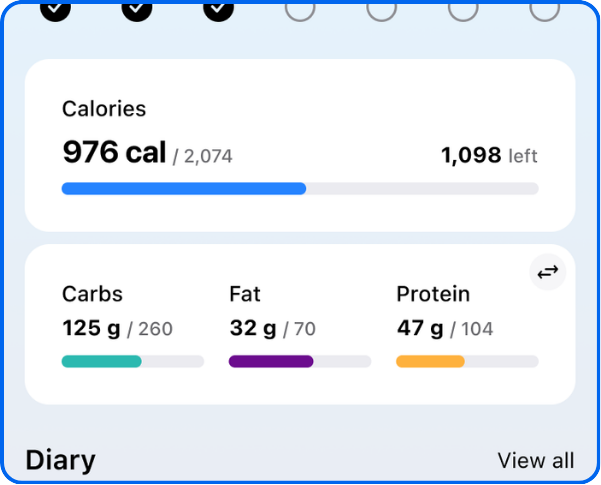
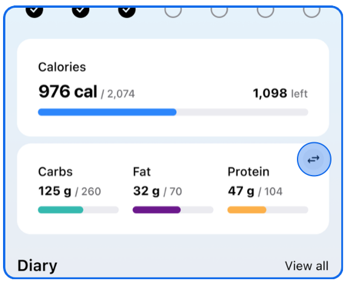

MyFitnessPal 深度盘点：从记食工具到健康管理中枢的完整能力版图
MyFitnessPal 不只是一个卡路里计数器——营养分析、宏量定制、设备同步、数据导出，这篇把它的能力面、亮点与局限系统性铺开。
从 MyFitnessPal官网 可以看到，这款应用从 2005 年上线至今，累计注册用户已超过两亿。早期它只是一个帮人记录饮食的小工具，十八年过去，这套产品已经长成像一款「个人健康操作系统」——营养、运动、体重、睡眠全链路铺开，而且在免费与付费之间做了清晰的能力分层。
为什么值得专门花一篇深度盘点？因为它的能力边界经常被低估。很多人从官方下载拿到安装包、装了用几周就卸载，说「不就是记个卡路里吗」；另一些人则当成生活方式，一用就是五六年。这两种体验的分歧，本质上是用户有没有摸到它真正的骨架——那不是几个分散的功能按钮，而是一套围绕「从摄入到消耗」的数据闭环。
下面按能力域拆开讲，每组讲清楚它解决什么问题、亮点在哪、什么场景用得上。
营养记录与分析：它不只是帮你吃少，而是帮你吃对
记录饮食是 MyFitnessPal 的入口功能，但真正拉开差距的是它在记录之上的分析层。
记食本身有几条路径：手动搜索食物库、扫码识别包装条码、MealScan 拍照片自动识别。食物库的颗粒度是它最早建立的护城河——全球数百万条食品数据，从连锁餐饮的整份套餐到散装调料都有收录，而且社区用户还在持续补充。这意味着你不需要手动输入每一条营养数据，搜出来选一个就行。
但记录只是把数据放进抽屉，分析层才是把抽屉里的东西分门别类摆上桌面。改版之后，今天页上多了两张关键卡片：卡路里卡和宏量卡，点进去分别跳转到营养页的两个标签。日视图下，卡路里标签给你一张餐次饼图——早餐、午餐、晚餐、加餐各占全天热量的比例一眼可见。宏量标签给你另一张饼图，展示碳水、蛋白质、脂肪三大宏量的构成比。切到周视图，两张饼自动变成柱状图，横向对比一周七天的变化趋势。

饼图读出来的行动信号比数字本身更有用。加餐占比常年超过 20%，热量大概率花在无意识的零碎进食上；晚餐占总热量过半，是掉秤慢的常见结构性原因——白天饿着晚上补，身体的代谢节奏被打乱。宏量饼图脂肪过半，优先排查烹调油和外食，这些隐形脂肪是很多人热量超标的主因。
这一层对减脂人群尤其关键。普通用户可能只盯一个总热量数字，但营养分析帮你看清楚：同样是 1800 千卡，碳水 60% 和蛋白 35% 带来的身体反应完全不同，前者可能让你下午就饿，后者能撑到晚饭。
宏量目标定制：把抽象的「吃健康」变成可执行的数字
很多人想控制饮食，停留在「多吃蔬菜少吃肉」的模糊指令上——MyFitnessPal 的宏量目标功能，是把这些模糊指令翻译成每天可以照着执行的百分比或克数。
修改路径很简单：目标页里点「卡路里与宏量目标」卡片，然后调整碳水、蛋白质、脂肪三项的比例。免费版用百分比口径，应用会按你设定的卡路里目标反推各项应该吃多少克，但你只能调比例。会员版升级为克数口径——直接设「蛋白质 150 克」就是 150 克，不用心算百分比。
这点对健身人群特别重要。社区里有个常用经验：每公斤体重 1.6 到 2.2 克蛋白质是增肌期的合理区间。如果用百分比口径，你得先算总卡路里再折算；用克数口径，直接按体重乘出来填进去就行。官方还有个宏量计算器工具，输入体重和活动量就能算出蛋白建议值，算完直接导入目标。
改宏量占比的时候，你会发现卡路里目标跟着跳——这不是 bug，是换算机制在起作用。碳水和蛋白每克 4 千卡，脂肪每克 9 千卡，占比组合一变，总热量结构自然跟着变。想让卡路里数字纹丝不动，先锁卡路里再微调宏量比例就行。
社区里沉淀了几套常见的宏量组合作为起点：均衡倾向是 50% 碳水 / 20% 蛋白 / 30% 脂肪；高蛋白减脂改成 40/35/25；低碳倾向 30/30/40；生酮则是 5~10% 碳水、25~30% 蛋白、60% 以上脂肪。这些只是起点，具体数值因人而异，但有一套数字参考总比凭感觉吃靠谱。遇到具体参数拿不准的地方，可以去 MyFitnessPal文档 里翻详细说明。

设备同步与数据生态：它不是孤岛，而是中枢
MyFitnessPal 自己不造运动手表、不造体脂秤，但它通过第三方连接把这些设备的数据汇聚进来。官方口径是 40 多个应用与设备可以接入，覆盖了 Apple Health、Health Connect、Google Health 三大平台健康框架，以及 Apple Watch、Fitbit、Garmin、三星健康等主流穿戴设备。
同步方向是单向为主：步数、运动消耗、体重、睡眠这些数据从设备进应用，营养数据只出不进——你的日记不会写进手表。这其实是个合理的设计：手表上看一眼知道今天走了多少步，精细的营养记录还是留在手机端操作更方便。
连接建立后，新产生的数据自动互通，但历史数据不追溯。所以如果你用了几个月之后才连上 Apple Health，之前那些手动记的运动步数不会自动补进去。另外，每个第三方应用在「应用与设备」面板里单独挂授权，不用就断开，这点做得比较克制——不是一上来就要你全部权限。
同步链路偶尔会出问题。Garmin 这类不直连的设备走 Health Connect 或 Apple Health 中转，链路长了一环，排错的时候要多一层检查。但总体来说，当手动记录变成自动记录之后，用户的留存率会明显提升——毕竟每天吃完饭打开 app 打字是一回事，数据自己跳进来是另一回事。
数据导出：记了几年的日记，你带得走吗
数据导出是 Premium 专属功能，但它触及的是一个很多人不会提前想、等到想换平台或删号才突然意识到的问题：我记了三年的日记，能带走吗？
能。导出按时间段发起，拿到的是结构化数据文件——餐级营养明细、进度历史、运动历史三类都有，适合导入电子表格或写脚本自己分析。但免费版没有这个按钮，数据并非完全锁死，只是得手动来：网页版日记表格视图里逐周可见，人工复制关键数据虽然笨但有效；或者定期截 Progress 页的趋势图留档。
社区里有个常见操作：准备删号之前，短期开一个月会员专门用来导出数据，导完退订。这个操作流程上是合规的，但建议不要等到删号前才做——云账号再可靠，自己手里有一份结构化数据才叫备份，按季度或半年导一次存档是个好习惯。
短板也要说
盘点不能只讲好的，它的几个局限也很实在。
第一，免费与付费的能力分层在某些地方切得偏狠。最明显的是数据导出——这是一个和用户自身数据安全强相关的能力，锁在付费后面确实会让人不爽。宏量目标也是，想按克数设就得开 Premium，虽然百分比对大多数人够用，但健身人群对克数的需求很刚性。
第二，第三方连接的稳定性参差不齐。主力设备（Apple Watch、Fitbit）的同步通常没什么问题，但一些偏小众的品牌走 Health Connect 中转链路时，偶尔会出现数据延迟或遗漏的情况，排错成本也偏高。
第三，产品本身越来越重。从纯记食工具到健康管理中枢，功能模块多了之后，导航层级变深，老用户可能还好，新用户上手需要花时间摸清楚每张卡片、每个标签页之间的关系。
什么样的人该用它
三类人群最能吃满 MyFitnessPal 的能力面：
第一类，有明确减脂或增肌目标的人。这类人对饮食结构有要求，不只是想吃少，而是想吃对——宏量目标定制配合营养饼图分析，刚好踩中了他们的核心需求。加上会员的克数口径和数据导出，用完一个周期可以拿自己的数据做复盘分析。
第二类，已经在用运动手表或体脂秤的人。设备同步把手动记录变成自动记录，使用成本一下子降下来了。你不需要专门打开 MyFitnessPal 去记步数和消耗，数据自己进来，每天花个两分钟记一下三顿饭就行。
第三类，喜欢数据驱动的自我管理者。Progress 页的趋势周报、年度体重曲线、长期营养数据的导出分析——对这类人来说，MyFitnessPal 是一套可以积累几年甚至十几年的个人健康数据库，而不是一个临时用三个月的减脂工具。
不适合的场景也有：如果你只是想记记步数或者偶尔跑个步，那用手机自带的健康应用可能就够了；如果你的目标只是养成「按时吃饭」的作息习惯，MyFitnessPal 可能显得过重。
总之，MyFitnessPal 值得认真对待的地方在于——它不是那种靠几个炫酷功能吸引眼球的应用，而是一套需要你用起来、沉淀数据之后才会越来越好用的系统。它的能力版图铺得很广，但是否能真正帮到你，取决于你愿不愿意花时间把这些散落的能力拼成属于自己的那一块。
资料归档的话，你可以去 GitHub 上找找相关文档仓库，Gitee 和 GitCode 上也能拿到对应的备份版本，三个平台的路径结构保持一致，按需取用就行。